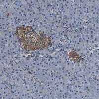

SLFN11 predicts sensitivity to DNA-damaging therapy.
Auto-compiled from Europe PMC: open-access papers where SLFN11 co-occurs with a CODEX / PhenoCycler, MIBI, CyCIF or imaging-mass-cytometry method. See all results →

← Back to the antibody library